ADS Homework Review
PTA homework of ZJU Advanced Data Structure and Algorithm, 2022 Spring & Summer.
Hw1
Q2-1. If the depth of an AVL tree is 6 (the depth of an empty tree is defined to be -1), then the minimum possible number of nodes in this tree is:
A. 13
B. 17
C. 20
D. 33
Answer
D。
| depth | -1 | 0 | 1 | 2 | 3 | 4 | 5 | 6 |
|---|---|---|---|---|---|---|---|---|
| nodes | 0 | 1 | 2 | 4 | 7 | 12 | 20 | 33 |
Q2-2. Insert 2, 1, 4, 5, 9, 3, 6, 7 into an initially empty AVL tree. Which one of the following statements is FALSE?
A. 4 is the root
B. 3 and 7 are siblings
C. 2 and 6 are siblings
D. 9 is the parent of 7
Q2-3. For the result of accessing the keys 3, 9, 1, 5 in order in the splay tree in the following figure, which one of the following statements is FALSE?
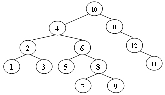
A. 5 is the root
B. 1 and 9 are siblings
C. 6 and 10 are siblings
D. 3 is the parent of 4
Answer
D。最终结果如下图
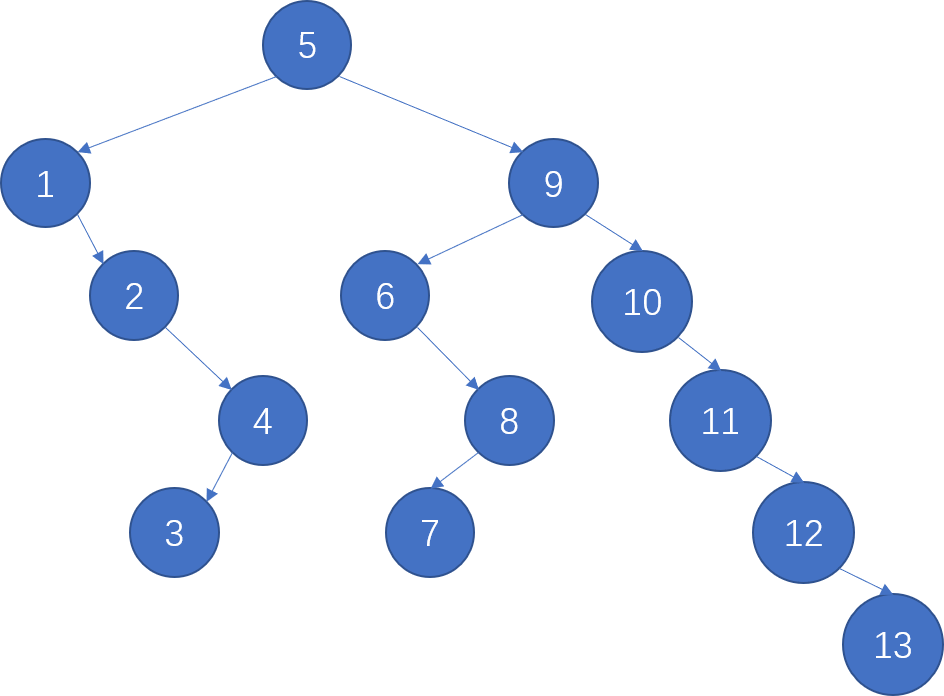
Q2-4. When doing amortized analysis, which one of the following statements is FALSE?
A. Aggregate analysis shows that for all \(n\), a sequence of \(n\) operations takes worst-case time \(T(n)\) in total. Then the amortized cost per operation is therefore \(T(n)/n\)
B. For potential method, a good potential function should always assume its maximum at the start of the sequence
C. For accounting method, when an operation's amortized cost exceeds its actual cost, we save the difference as credit to pay for later operations whose amortized cost is less than their actual cost
D. The difference between aggregate analysis and accounting method is that the later one assumes that the amortized costs of the operations may differ from each other
Answer
B。B 应该是 minimum。
Q2-5. Consider the following buffer management problem. Initially the buffer size (the number of blocks) is one. Each block can accommodate exactly one item. As soon as a new item arrives, check if there is an available block. If yes, put the item into the block, induced a cost of one. Otherwise, the buffer size is doubled, and then the item is able to put into. Moreover, the old items have to be moved into the new buffer so it costs \(k+1\) to make this insertion, where \(k\) is the number of old items. Clearly, if there are \(N\) items, the worst-case cost for one insertion can be \(\Omega(N)\). To show that the average cost is \(O(1)\), let us turn to the amortized analysis. To simplify the problem, assume that the buffer is full after all the \(N\) items are placed. Which of the following potential functions works?
A. The number of items currently in the buffer
B. The opposite number of items currently in the buffer
C. The number of available blocks currently in the buffer
D. The opposite number of available blocks in the buffer
Answer
D。如下图。
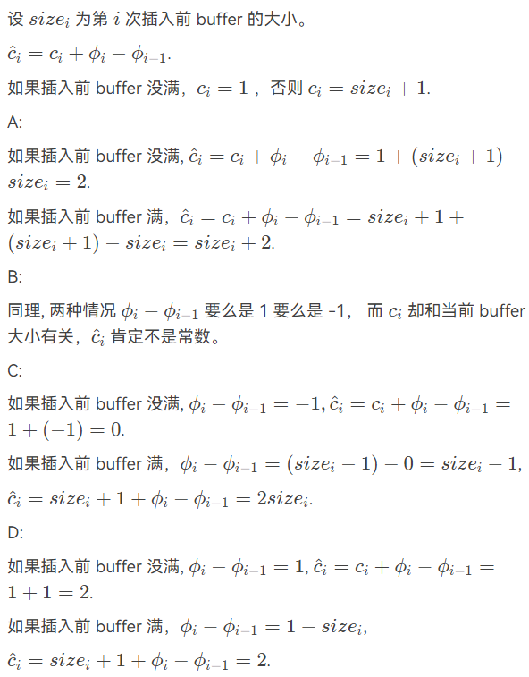
Hw2
Q1-1. A 2-3 tree with 3 nonleaf nodes must have 18 keys at most. (T/F)
Answer
T。必然一根两中间，233=18。
Q2-1 In the red-black tree that results after successively inserting the keys 41; 38; 31; 12; 19; 8 into an initially empty red-black tree, which one of the following statements is FALSE?
A. 38 is the root
B. 19 and 41 are siblings, and they are both red
C. 12 and 31 are siblings, and they are both black
D. 8 is red
Q2-2. After deleting 15 from the red-black tree given in the figure, which one of the following statements must be FALSE?
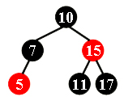
A. 11 is the parent of 17, and 11 is black
B. 17 is the parent of 11, and 11 is red
C. 11 is the parent of 17, and 11 is red
D. 17 is the parent of 11, and 17 is black
Answer
C。可能 11 顶上去，则 11 为黑、17 为红。
也可能 17 顶上去，则 17 为黑、11 为红。
Q2-3. Insert 3, 1, 4, 5, 9, 2, 6, 8, 7, 0 into an initially empty 2-3 tree (with splitting). Which one of the following statements is FALSE?
A. 7 and 8 are in the same node
B. the parent of the node containing 5 has 3 children
C. the first key stored in the root is 6
D. there are 5 leaf nodes
Answer
A。最终结果如下图
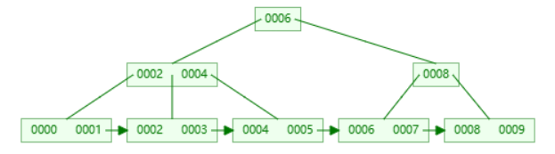
如果搞不清过程，不建议使用对应网站的 B+ 树模拟，它那里的 B+ 树的定义似乎和 ads 有所不同（采用的可能是数据库的定义
Q2-4. After deleting 9 from the 2-3 tree given in the figure, which one of the following statements is FALSE?
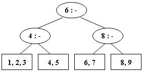
A. the root is full
B. the second key stored in the root is 6
C. 6 and 8 are in the same node
D. 6 and 5 are in the same node
Answer
D。最终结果如下图。
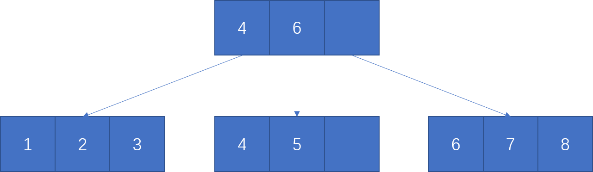
Q2-5. Which of the following statements concerning a B+ tree of order \(M\) is TRUE?
A. the root always has between 2 and \(M\) children
B. not all leaves are at the same depth
C. leaves and nonleaf nodes have some key values in common
D. all nonleaf nodes have between \(\lceil M/2\rceil\) and \(M\) children
Answer
C。A，考虑根为叶。B，所有叶必然同深。D，考虑根。
Hw3
Q1-1. In distributed indexing, document-partitioned strategy is to store on each node all the documents that contain the terms in a certain range. (T/F)
Answer
F。这是 term-partitioned 策略。
Q1-2. When evaluating the performance of data retrieval, it is important to measure the relevancy of the answer set. (T/F)
Answer
F。召回率和整个答案集的相关性无关。
Q1-3. Precision is more important than recall when evaluating the explosive detection in airport security. (T/F)
Answer
F。安全至上，尽量都发现。
Q1-4. While accessing a term by hashing in an inverted file index, range searches are expensive. (T/F)
Answer
T。
Q2-1. When measuring the relevancy of the answer set, if the precision is high but the recall is low, it means that:
A. most of the relevant documents are retrieved, but too many irrelevant documents are returned as well
B. most of the retrieved documents are relevant, but still a lot of relevant documents are missed
C. most of the relevant documents are retrieved, but the benchmark set is not large enough
D. most of the retrieved documents are relevant, but the benchmark set is not large enough
Answer
B。
Q2-2. Which of the following is NOT concerned for measuring a search engine?
A. How fast does it index
B. How fast does it search
C. How friendly is the interface
D. How relevant is the answer set
Answer
C。理工科钢铁直男不需要考虑用户用着舒服不舒服，单刀直入看效果。
Q2-3 There are 28000 documents in the database. The statistic data for one query are shown in the following table. The recall is: __
| Relevant | Irrelevant | |
|---|---|---|
| Retrieved | 4000 | 12000 |
| Not Retrieved | 8000 | 4000 |
A. 14%
B. 25%
C. 33%
D. 50%
Answer
C。
Hw4
Q1-1. The result of inserting keys \(1\) to \(2^k-1\) for any \(k>4\) in order into an initially empty skew heap is always a full binary tree. (T/F)
Answer
T。
Q1-2. The right path of a skew heap can be arbitrarily long. (T/F)
Answer
T。skew heap 只有轻结点受类似 leftist heap 的限制。
相对而言，leftist heap 就不能这么任意了，它受 \(\log N\) 限制。
Q2-1. The right path of a skew heap can be arbitrarily long.
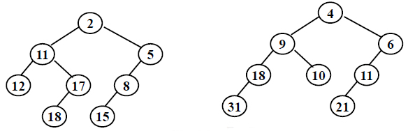
A. 2 is the root with 11 being its right child
B. the depths of 9 and 12 are the same
C. 21 is the deepest node with 11 being its parent
D. the null path length of 4 is less than that of 2
Answer
D。都是 2，如下图
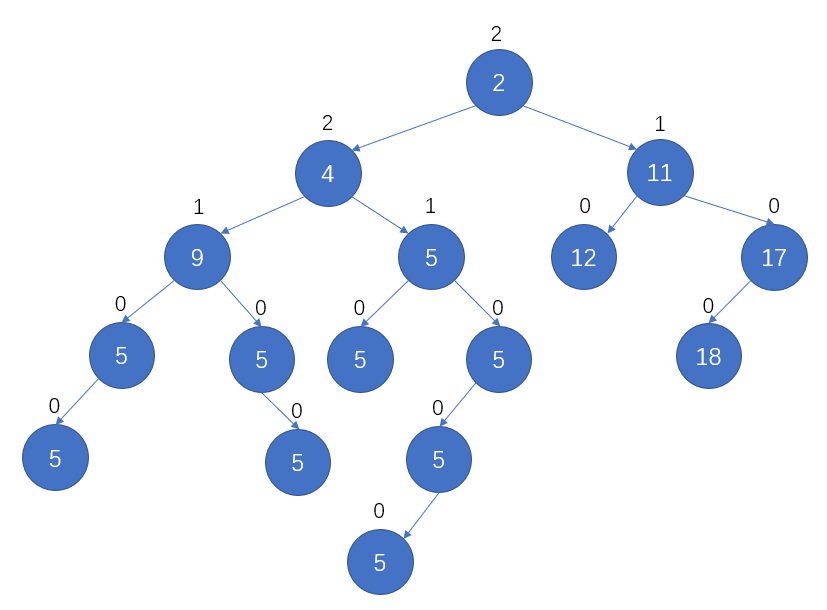
Q2-2. We can perform BuildHeap for leftist heaps by considering each element as a one-node leftist heap, placing all these heaps on a queue, and performing the following step: Until only one heap is on the queue,， dequeue two heaps, merge them, and enqueue the result. Which one of the following statements is FALSE?
A. in the \(k\)-th run, \(\lceil N/2k\rceil\) leftist heaps are formed, each contains \(2k\) nodes
B. the worst case is when \(N=2K\) for some integer \(K\)
C. the time complexity \(T(N)=O( \frac N 2 \log 2^0 - \frac {N} {2^2}\log 2^1\frac{N}{2^3}\log 2^2 + \cdots + \frac {N} {2^K}\log 2^{K-1})\) for some integer K so that \(N=2K\)
D. the worst case time complexity of this algorithm is \(\Theta(N\log N)\)
Answer
D。根据 C，可得 \(T=O(N)\)。
Q2-3. Insert keys 1 to 15 in order into an initially empty skew heap. Which one of the following statements is FALSE?
A. the resulting tree is a complete binary tree
B. there are 6 leaf nodes
C. 6 is the left child of 2
D. 11 is the right child of 7
Answer
B。有 8 个叶结点。如下图
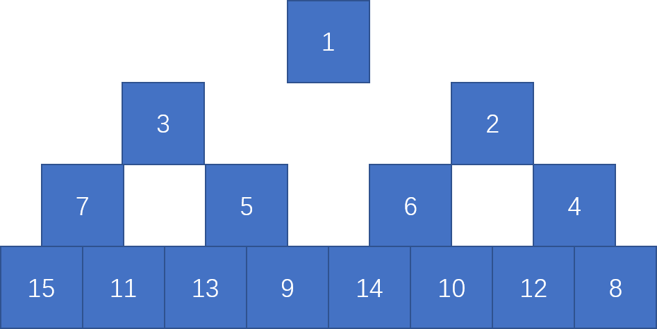
Q2-4. Merge the two skew heaps in the following figure. Which one of the following statements is FALSE?
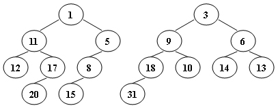
A. 15 is the right child of 8
B. 14 is the right child of 6
C. 1 is the root
D. 9 is the right child of 3
Answer
A。15 是 8 的左子结点。如下图
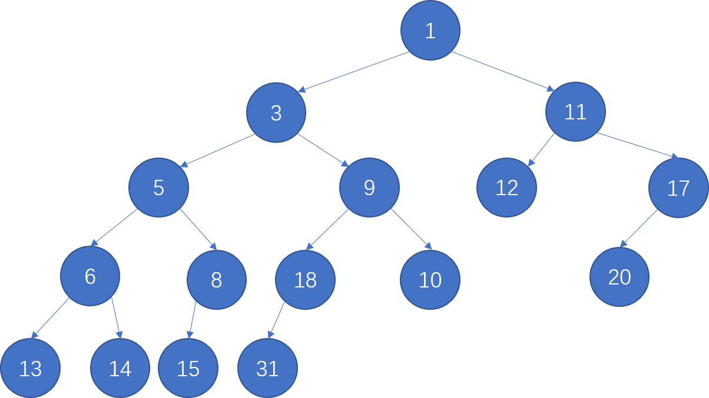
Hw5
Q2-1. Which of the following binomial trees can represent a binomial queue of size 42?
A. \(B_0B_1B_2B_3B_4B_5\)
B. \(B_1B_3B_5\)
C. \(B_1B_5\)
D. \(B_2B_4\)
Answer
B。\(2^1+2^3+2^3=2+8+32=42\)
Q2-2. For a binomial queue, __ takes a constant time on average.
A. merging
B. find-max
C. delete-min
D. insertion
Answer
D。均摊都常数时间了，平均肯定是常数时间。
find-max 比较难操作，find-min 也是常数时间。
merge 和 delete-min 都是 \(O(\log N)\)。
Q2-3. Merge the two binomial queues in the following figure. Which one of the following statements must be FALSE?
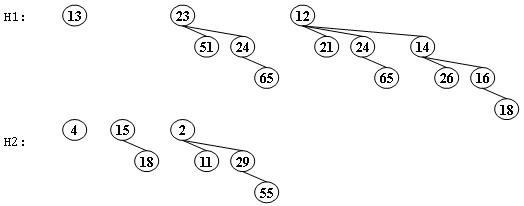
A. there are two binomial trees after merging, which are \(B_2\) and \(B_4\)
B. 13 and 15 are the children of 4
C. if 23 is a child of 2, then 12 must be another child of 2
D. if 4 is a child of 2, then 23 must be another child of 2
Answer
D。4 如果是 2 的子结点，说明 23 对应子树保持为 \(B_2\)，不参与 merge。
Q2-4. Delete the minimum number from the given binomial queues in the following figure. Which one of the following statements must be FALSE?
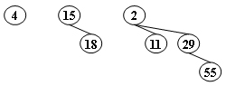
A. there are two binomial trees after deletion, which are \(B_1\) and \(B_2\)
B. 11 and 15 can be the children of 4
C. 29 can never be the root of any resulting binomial tree
D. if 29 is a child of 4, then 15 must be the root of \(B_1\)
Answer
C。29-55 可以自成 \(B_1\)，不参与 merge。
Hw6
Q2-1. In the Tic-tac-toe game, a "goodness" function of a position is defined as \(f(P)=W_{computer}-W_{human}\), where \(W\) is the number of potential wins at position \(P\).
In the following figure, \(O\) represents the computer and \(X\) the human. What is the goodness of the position of the figure?
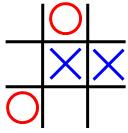
A. -1
B. 0
C. 4
D. 5
Answer
B。=3-3=0
Q2-2. Given the following game tree, which node is the first one to be pruned with \(\alpha-\beta\) pruning algorithm?
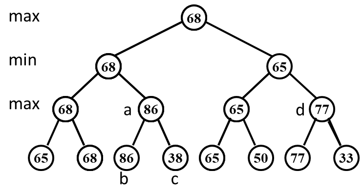
A. a
B. b
C. c
D. d
Answer
C。搜索到 b 等于 86 时，根据祖结点是 68，min 的策略，c 结点不需要继续搜索了，即 \(\beta\) 剪枝。
Hw7
Q2-1. When solving a problem with input size \(N\) by divide and conquer, if at each stage the problem is divided into 8 sub-problems of equal size \(N/3\), and the conquer step takes \(O(N^2\log N)\) to form the solution from the sub-solutions, then the overall time complexity is __.
A. \(O(N^2\log N)\)
B. \(O(N^2\log^2N)\)
C. \(O(N^3\log N)\)
D. \(O(N^{\log8/\log3})\)
Answer
A。
则 \(N^{\log_ba}=N^{\log_38}<N^2<N^2\log N\)( 量级上 )。
Q2-2. To solve a problem with input size \(N\) by divide and conquer algorithm, among the following methods, __ is the worst.
A. divide into 2 sub-problems of equal complexity \(N/3\) and conquer in \(O(N)\)
B. divide into 2 sub-problems of equal complexity \(N/3\) and conquer in \(O(NlogN)\)
C. divide into 3 sub-problems of equal complexity \(N/2\) and conquer in \(O(N)\)
D. divide into 3 sub-problems of equal complexity \(N/3\) and conquer in \(O(NlogN)\)
Answer
C。
A，\(T(N)=2T(N/3)+O(N)\)，则 \(N^{\log_ba}=N^{\log_32}<N\)，\(T=O(N)\)。
B，\(T(N)=2T(N/3)+O(N\log N)\)，则 \(N^{\log_ba}=N^{\log_32}<N<N\log N\)，\(T=O(N\log N)\)。
C，\(T(N)=3T(N/2)+O(N)\)，则 \(N^{\log_ba}=N^{\log_23}>N\)，\(T=O(N^{\log_23})\)。
D，\(T(N)=3T(N/3)+O(N\log N)\)，则 \(N^{\log_ba}=N\)，\(T=O(N\log^2 N)\)。
Q2-3. 3-way-mergesort : Suppose instead of dividing in two halves at each step of the mergesort, we divide into three one thirds, sort each part, and finally combine all of them using a three-way-merge. What is the overall time complexity of this algorithm ?
A. \(O(n(\log^2 n))\)
B. \(O(n^2\log n)\)
C. \(O(n\log n)\)
D. \(O(n)\)
Answer
B。
\(T(N)=3T(N/3)+O(N)\)，故 \(O(N\log N)\)
Q2-4. Which one of the following is the lowest upper bound of \(T(n)\) for the following recursion \(T(n)=2T(\sqrt{n})+\log n\)?
A. \(O(\log n\log\log n)\)
B. \(O(log^2 n)\)
C. \(O(n\log n)\)
D. \(O(n^2)\)
Answer
A。
令 \(n^{1/2^k}=2\)，可得 \(k=\log\log n\)。则可得
Hw8
Q2-1. Rod-cutting Problem: Given a rod of total length \(N\) inches and a table of selling prices \(P_L\) for lengths \(L=1,2,⋯,M\). You are asked to find the maximum revenue \(R_N\) obtainable by cutting up the rod and selling the pieces. For example, based on the following table of prices, if we are to sell an 8-inch rod, the optimal solution is to cut it into two pieces of lengths 2 and 6, which produces revenue \(R_8=P_2+P_6=5+17=22\). And if we are to sell a 3-inch rod, the best way is not to cut it at all.
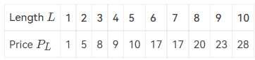
Which one of the following statements is FALSE?
A. This problem can be solved by dynamic programming
B. The time complexity of this algorithm is \(O(N^2)\)
C. If \(N\leqslant M\), we have \(R_N=\max\{P_N, \max\limits_{1\leqslant i<N}\{R_i+R_{N-i}\}\}\)
D. If \(N>M\), we have \(R_N=\max\limits_{1\leqslant i<N}\{R_i+R_{N-M}\}\)
Answer
D。
D，\(R_N=\max\limits_{1\leqslant i<N}\{R_i+R_{N-i}\}\)。
Q2-2. In dynamic programming, we derive a recurrence relation for the solution to one subproblem in terms of solutions to other subproblems. To turn this relation into a bottom up dynamic programming algorithm, we need an order to fill in the solution cells in a table, such that all needed subproblems are solved before solving a subproblem. Among the following relations, which one is impossible to be computed?
A. \(A(i,j)=\min(A(i−1,j),A(i,j−1),A(i−1,j−1))\)
B. \(A(i,j)=F(A(\min(i, j)−1,\min(i, j)−1),A(\max(i,j)−1,\max(i,j)−1))\)
C. \(A(i,j)=F(A(i,j−1),A(i−1,j−1),A(i−1,j+1))\)
D. \(A(i,j)=F(A(i−2,j−2),A(i+2,j+2))\)
Answer
D。ABC 按照 i 和 j 的增序算即可。D 按增序也不对，降序也不对。
Q2-3. Given a recurrence equation \(f_{i,j,k}=f_{i,j+1,k}+\min\limits_{0\leqslant l\leqslant k} \{f_{i-1,j,l}+w_{j,l}\}\). To solve this equation in an iterative way, we cannot fill up a table as follows:
A. for k in 0 to n: for i in 0 to n: for j in n to 0
B. for i in 0 to n: for j in 0 to n: for k in 0 to n
C. for i in 0 to n: for j in n to 0: for k in n to 0
D. for i in 0 to n: for j in n to 0: for k in 0 to n
Answer
B。
\(j\) 不能增序算，因为 \(f_{i,j,k}\) 依赖于 \(f_{i,j+1,k}\)。
Hw9
Q1-1. Let \(S\) be the set of activities in Activity Selection Problem. Then the earliest finish activity \(a_m\) must be included in all the maximum-size subset of mutually compatible activities of \(S\). (T/F)
Answer
F。最优解不一定是贪婪最优解。
Q1-2. Greedy algorithm works only if the local optimum is equal to the global optimum. (T/F)
Answer
T。即最优子结构前提。
Hw10
Q1-1. If \(L_1\leq_p L_2\) and \(L_2\in NP\), then \(L_1\in NP\). (T/F)
Answer
T。
这里的 \(\leq_p\) 可以认为是难度对比，其实是 \(L_1\) 可以多项式规约至 \(L_2\)。
\(L_2\in NP\)，那么 \(L_2\) 可以在非确定性图灵机上多项式时间解决，\(L_1\) 可以先多项式时间规约为 \(L_2\)，然后再解决 \(L_2\)。
所以 \(L_1\) 也能够在非确定性图灵机上多项式时间解决，即 \(L_1\in NP\)。
Q1-2. All NP-complete problems are NP problems. (T/F)
Answer
T。NPC 问题是 NP 问题的一种。
Q1-3. All the languages can be decided by a non-deterministic machine. (T/F)
Answer
F。忽略了不可判定问题。
Q1-4. All NP problems can be solved in polynomial time in a non-deterministic machine. (T/F)
Answer
T。NP 问题的定义。
Q1-5. If a problem can be solved by dynamic programming, it must be solved in polynomial time. (T/F)
Answer
F。比如背包问题，其实不算 P 类。
Q2-1. Among the following problems, __ is NOT an NP-complete problem.
A. Vertex cover problem
B. Hamiltonian cycle problem
C. Halting problem
D. Satisfiability problem
Answer
C。
C 是不可判定问题。D 是最早发现的 NPC 问题。
A 顶点覆盖、B 哈密顿回路也都是 NPC 问题。
Q2-2. Suppose \(Q\) is a problem in \(NP\), but not necessarily NP-complete. Which of the following is FALSE?
A. A polynomial-time algorithm for SAT would sufficiently imply a polynomial-time algorithm for \(Q\).
B. A polynomial-time algorithm for \(Q\) would sufficiently imply a polynomial-time algorithm for SAT.
C. If \(Q\notin P\), then \(P\neq NP\).
D. If \(Q\) is NP-hard, then \(Q\) is NP-complete.
Answer
B。
A，某个 NPC=P，则全体 NP=P。
B，如果 Q 不是 NPC 问题就不会有这样的性质。
C，一个 NP 不是 P，则 NP≠P。
D，NP-hard 且 NP 就确定了 NPC。
Hw11
Q1-1. Suppose ALG is an \(\alpha\)-approximation algorithm for an optimization problem \(\prod\) whose approximation ratio is tight. Then for every \(\varepsilon>0\) there is no \((\alpha−\varepsilon)\)-approximation algorithm for \(\prod\) unless P = NP. (T/F)
Answer
F。
对于一种算法而言，近似比为 \(\alpha\) ，那么 \(\forall \beta > \alpha\) ，都可以说 \(\beta\) 是其近似比。如果 \(\alpha\) 是 tight 的，则 \(\alpha\) 是一个下确界。
但这都只是对这一种算法的分析，一个 tight 的近似比只能说明你对这种算法的分析到位了，而不能说明这个问题没有更好的算法。这里完全是两码事。
Q1-2. As we know there is a 2-approximation algorithm for the Vertex Cover problem. Then we must be able to obtain a 2-approximation algorithm for the Clique problem, since the Clique problem can be polynomially reduced to the Vertex Cover problem. (T/F)
Answer
F。
首先，确实有 Clique problem \(\leq_p\) Vertex Cover problem，Vertex Cover problem 也确实有 2-approximation 算法，但是这两个 problem 衡量 Cost 的标准是不一样的。
在 Vertex Cover problem 中的 2- 近似算法得到的解，在 Clique problem 约化成的 Vertex Cover problem 中得到的解虽然符合 Vertex Cover problem 的 Cost 标准下的 2- 近似，却并不一定符合 Clique problem 标准下的 2- 近似。
回顾团问题 (Clique problem) 的描述：寻找最大完全子图，那么寻找到的完全子图中顶点数 (\(C_1\)) 越多越好。
回顾顶点覆盖问题 (Vertex Cover problem) 的描述：寻找最小规模的顶点覆盖，那么寻找到的顶点覆盖中顶点数 (\(C_2\)) 越少越好。
回顾约化方法：
设 Vertex Cover problem 的 2- 近似算法得到的顶点覆盖规模为 \(T\)，最优规模为 \(T^*\)，则
可见 \(\rho_1\) 是不可控的。
Q2-1. For the bin-packing problem: let \(S=\sum_iS_i\). Which of the following statements is FALSE?
A. The number of bins used by the next-fit heuristic is never more than \(\lceil 2S\rceil\)
B. The number of bins used by the first-fit heuristic is never more than \(\lceil 2S\rceil\)
C. The next-fit heuristic leaves at most one bin less than half full
D. The first-fit heuristic leaves at most one bin less than half full
Answer
C。
设 next-fit 算法最终生成 \(2M\) 或 \(2M+1\) 个 bin，则
因此有 \(2S>2M \Rightarrow \lceil 2S\rceil \geqslant 2M+1\)，因此 A 正确。
first-fit(1.7-approximation) 优于 next-fit(2-approximation)，因此 B 也正确。
对于 D，如果存在两个少于半满的 bin，那么在产生第二个少于半满的 bin 时，不可能在对前面 bins 的扫描中找不到放不进去的 bin（第一个少于半满的 bin 肯定能放进去
对于 C，两个少于半满的 bin 只要不是相邻出现就是可能的，因此 C 错误。
Q2-2. To approximate a maximum spanning tree \(T\) of an undirected graph \(G=(V,E)\) with distinct edge weights \(w(u,v)\) on each edge \((u,v)\in E\), let's denote the set of maximum-weight edges incident on each vertex by \(S\). Also let \(w(E')=\sum _{(u,v)\in E}w(u,v)\) for any edge set \(E'\). Which of the following statements is TRUE?
A. \(S=T\) for any graph \(G\)
B. \(S\neq T\) for any graph \(G\)
C. \(w(T)\geqslant w(S)/2\) for any graph \(G\)
D. None of the above
Answer
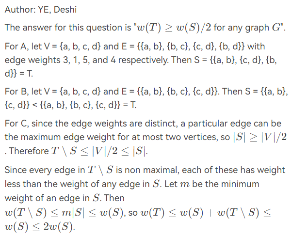
Hw12
Q1-1. For the graph given in the following figure, if we start from deleting the black vertex, then local search can always find the minimum vertex cover. (T/F)
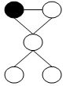
Answer
T。
Q1-2. We are given a set of sites \(S=\{s_{1}, s_{2}, \cdots, s_{n}\}\) in the plane, and we want to choose a set of \(k\) centers \(C=\{c_{1}, c_{2}, \cdots, c_{k}\}\) so that the maximum distance from a site to the nearest center is minimized. Here \(c_{i}\) can be an arbitrary point in the plane.
A local search algorithm arbitrarily choose \(k\) points in the plane to be the centers, then
-
(1) divide \(S\) into \(k\) sets, where \(S_{i}\) is the set of all sites for which \(c_{i}\) is the nearest center; and
-
(2) for each \(S_{i}\), compute the central position as a new center for all the sites in \(S_{i}\).
If steps (1) and (2) cause the covering radius to strictly decrease, we perform another iteration, otherwise the algorithm stops.
When the above local search algorithm terminates, the covering radius of its solution is at most 2 times the optimal covering radius. (T/F)
Answer
F。
给出反例如下图所示。其中有
都是需要被覆盖的点。
\(c_1\), \(c_3\) 半径为 \(\frac{\sqrt{3}}{2}\), \(c_2\) 半径为 \(0.0001\), \(c_4\) 半径为 \(4\)。这样得到的解就是 Local Search 的一个可能解，覆盖半径为 \(4\)。
然而，如果取
\(c_1\), \(c_3\) 半径为 \(\frac{\sqrt{41}}{4}\), \(c_2\) 半径为 \(\frac{\sqrt{7}}{2}\), \(c_4\) 半径为 \(0.0001\)。这样得到的解覆盖半径为 \(\frac{\sqrt{41}}{4}<2\)。
因此虽然不确定最优解是什么，但是最优解一定比上面的 Local Search 的解的二分之一更小 .
下图中，绿色圆圈表示 Local Search，蓝色圆圈表示给出的一个比 Local Search 的 \(1/2\) 更小的解。
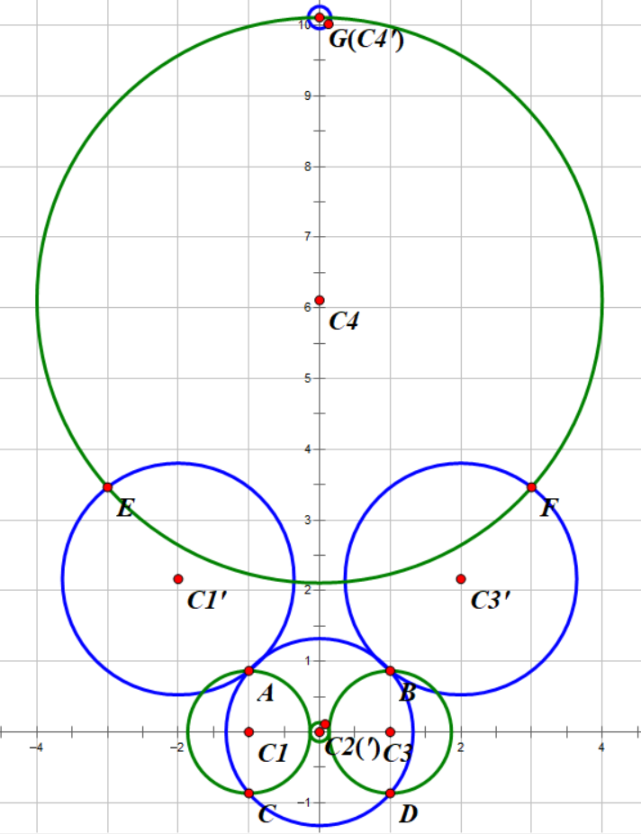
Q2-1. Spanning Tree Problem: Given an undirected graph \(G=(V, E)\), where \(|V|=n\) and \(|E|=m\). Let \(F\) be the set of all spanning trees of \(G\). Define \(d(u)\) to be the degree of a vertex \(u \in V\). Define \(w(e)\) to be the weight of an edge \(e \in E\).
We have the following three variants of spanning tree problems:
-
(1) Max Leaf Spanning Tree: find a spanning tree \(T \in F\) with a maximum number of leaves.
-
(2) Minimum Spanning Tree: find a spanning tree \(T \in F\) with a minimum total weight of all the edges in \(T\).
-
(3) Minimum Degree Spanning Tree: find a spanning tree \(T \in F\) such that its maximum degree of all the vertices is the smallest.
For a pair of edges \(\left(e, e^{\prime}\right)\) where \(e \in T\) and \(e^{\prime} \in(G-T)\) such that \(e\) belongs to the unique cycle of \(T \cup e^{\prime}\), we define edge-swap \(\left(e, e^{\prime}\right)\) to be \((T-e) \cup e^{\prime}\).
Here is a local search algorithm:
Here \(\operatorname{cost}(T)\) is the number of leaves in \(T\) in Max Leaf Spanning Tree; or is the total weight of \(T\) in Minimum Spanning Tree; or else is the minimum degree of \(T\) in Minimum Degree Spanning Tree.
Which of the following statements is TRUE?
A. The local search always return an optimal solution for Max Leaf Spanning Tree
B. The local search always return an optimal solution for Minimum Spanning Tree
C. The local search always return an optimal solution for Minimum Degree Spanning Tree
D. For neither of the problems that this local search always return an optimal solution
Answer
B。
最小生成树的 Prim 算法是局部性的 , 但是却是正确的 , 猜想最小生成树的局部最优就是全局最优。事实上这个结论确实是正确的，这个证明比较难，读者可以考虑势能函数等方法。
对于其他两种，寻找其反例。
对于 Max Leaf Spanning Tree，寻找反例如下 :
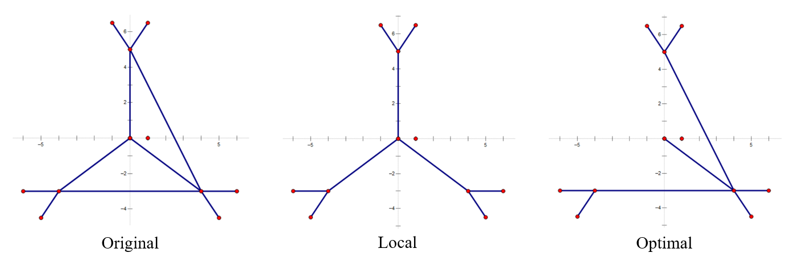
对于 Minimum Degree Spanning Tree，同样的原图 (Original)，寻找反例如下 :
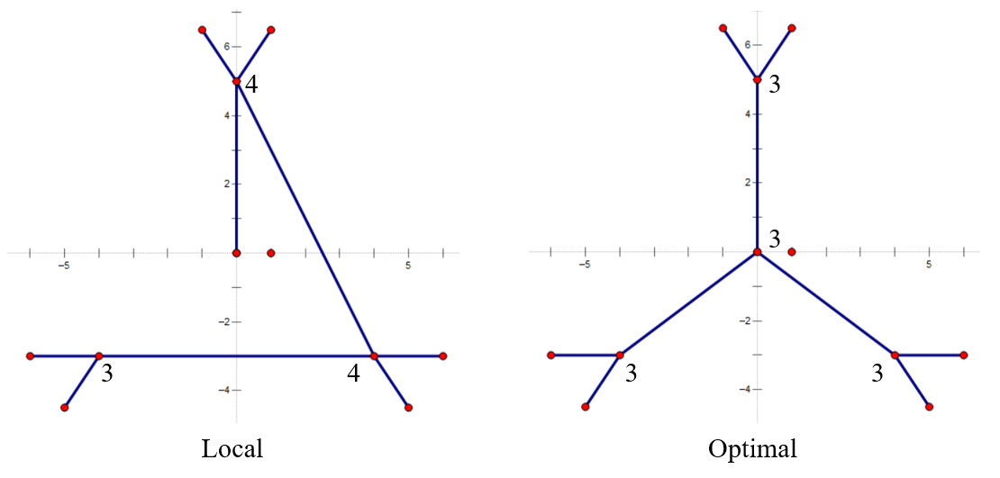
究其本质，最小生成树如果有更好的选择一定能交换，因为进行的正是边交换，直接影响的就是树的整体权值。另外两种树的性质则与顶点相关，不能直接影响，所以就寄了。
Q2-2. There are \(n\) jobs, and each job \(j\) has a processing time \(t_{j}\). We will use a local search algorithm to partition the jobs into two groups A and B, where set A is assigned to machine \(M_{1}\) and set \(\mathrm{B}\) to \(M_{2}\). The time needed to process all of the jobs on the two machines is \(T_{1}=\sum_{j \in A} t_{j}, T_{2}=\sum_{j \in B} t_{j}\). The problem is to minimize \(\left|T_{1}-T_{2}\right|\).
Local search: Start by assigning jobs \(1, \ldots, n / 2\) to \(M_{1}\), and the rest to \(M_{2}\).
The local moves are to move a single job from one machine to the other, and we only move a job if the move decreases the absolute difference in the processing times. Which of the following statement is true?
A. The problem is NP-hard and the local search algorithm will not terminate.
B. When there are many candidate jobs that can be moved to reduce the absolute difference, if we always move the job \(j\) with maximum \(t_j\) , then the local search terminates in at most \(n\) moves.
C. The local search algorithm always returns an optimal solution.
D. The local search algorithm always returns a local solution with \(\frac{1}{2}T_1\leqslant T\leqslant 2T_1\).
Answer
B。
A，每次都减小，肯定会减无可减，那么一定会终止。NP-hard 猜想应该是的，一共有 \(2^n\) 种状态。
B，一项被移到另一侧之后肯定不会再被移回来，因此最多移 \(n\) 次。
C，考虑 \(\{10,11,12,12,13,14\}=\{10,11,13\}+\{12,12,14\}\)，可知无法移动了，但是显然最优解是 \(\{11,12,13\}+\{10,12,14\}\)。
D，考虑 \(\{1,2,100\}=\{1,2\}+\{100\}\)。
Q2-3. Max-cut problem: Given an undirected graph \(G=(V, E)\) with positive integer edge weights \(w_{e}\), find a node partition \((A, B)\) such that \(w(A, B)\), the total weight of edges crossing the cut, is maximized. Let us define \(S^{\prime}\) be the neighbor of \(S\) such that \(S^{\prime}\) can be obtained from \(S\) by moving one node from \(A\) to \(B\), or one from \(B\) to \(A\). only choose a node which, when flipped, increases the cut value by at least \(w(A, B) /|V|\). Then which of the following is true?
A. Upon the termination of the algorithm, the algorithm returns a cut \((A,B)\) so that \(2.5w(A,B)\geqslant w(A^∗, b^*)\), where \((A^∗ ,B^∗)\) is an optimal partition.
B. The algorithm terminates after at most \(O(\log|V|\log W)\) flips, where \(W\) is the total weight of edges.
C. Upon the termination of the algorithm, the algorithm returns a cut \((A,B)\) so that \(2w(A,B)\geqslant w(A^∗, b^*)\).
D. The algorithm terminates after at most \(O(|V|^2)\) flips.
Answer
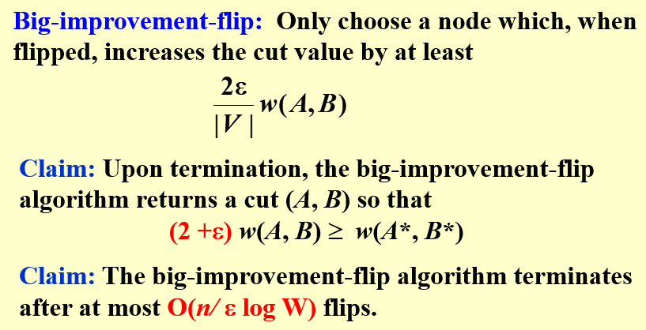
Hw13
Q1-1. Let \(a=\left(a_{1}, a_{2}, \ldots, a_{i}, \ldots, a_{j}, \ldots, a_{n}\right)\) denote the list of elements we want to sort. In the quicksort algorithm, if the pivot is selected uniformly at random. Then any two elements get compared at most once and the probability of \(a_{i}\) and \(a_{j}\) being compared is \(2 /(j-i+1)\) for \(j>i\), given that \(a_{i}\) or \(a_{j}\) is selected as the pivot. (T/F)
Answer
F。
举反例如下：{3, 4, 1, 2, }。如果第一次选 pivot 选中 3 或者 2，那么 1 和 4 会被分开，不会被比较。
如果第一次就选中 1 或 4，它们才会被比较。因此它们被比较的概率是 ½。按照 \(\dfrac{2}{j-i+1}\) 计算，应该是 1。
事实上，如果是已经被排序好的，这就是对的。
Q2-1. Given a linked list containg \(N\) nodes. Our task is to remove all the nodes. At each step, we randomly choose one node in the current list, then delete the selected node together with all the nodes after it. Here we assume that each time we choose one node uniformly among all the remaining nodes. What is the expected number of steps to remove all the nodes?
A.\(\Theta (\log N)\)
B.\(N/e\)
C.\(N/2\)
D.\(\sqrt{N}\)
Answer
A。
关键是得到递推式
直接代入 B,C，显然不对。事实上，可以看到这种递推式只可能出有理数，D 很可能出无理数，也不对。
然而，很轻松就可以通过强归纳法判断 \(a_n=O(\log N)\)。(\(\Omega\) 没有试过，应该也可以。)
这里的第二个不等号并不那么严格，不过 \(N\) 足够大的时候一定是严格的。
Q2-2. Use The Online Hiring Algorithm ( hire only once ). Assume that the quality input \(C[ ]\) is uniformly random.
When \(N = 271\) and \(k = 90\), the probability of hiring the Nth candidate is __.
Answer
⅓。要求前 270 人中最好的落在前 90 人中。
也可以分前 271 人中最好的在哪里进行讨论，即
Hw14
Q1-1. While comparing a serial algorithm with its parallel counterpart, we just concentrate on reducing the work load. (T/F)
Answer
F。
除了 work load \(W(n)\) 之外，减少 worst-case running time\(T(n)\) 也是所关注的
Q1-2. To evaluate the Prefix-Sums of a sequence of 16 numbers by the parallel algorithm with Balanced Binary Trees, C(4,1) is found before C(2,2). (T/F)
Answer
T。
本应该是 T，因为先计算 B()，B() 是自底向上计算的；后计算 C()，C() 是自顶向下计算的。
因此 C(4, 1) 显然应该在 C(2, 2) 之前计算。然而 PTA 的答案库里认为它是 F，未来可能被修改。
Q1-3. To evaluate the sum of a sequence of 16 numbers by the parallel algorithm with Balanced Binary Trees, B(1,6) is found before B(2,1). (T/F)
Answer
T。B() 自底向上计算。
Q1-4. In order to solve the maximum finding problem by a parallel algorithm with \(T(n)=O(1)\) , we need work load \(W(n)=\Omega(n^2)\) in return. (T/F)
Answer
F。
\(W(n)=\Omega(n^2)\) 的断言说最小也是 \(O(n^2)\)，然而这只是最基础的得到的结果。
采用 Random Sampling，就可以在 \(W(n)=O(n)\) 下得到结果。
Q1-5. To solve the Maximum Finding problem with parallel Random Sampling method, O(n) processors are required to get T(n)=O(1) and W(n)=O(n) with very high probability. (T/F)
Answer
T。
Hw15
Q1-1. To merge 55 runs using 3 tapes for a 2-way merge, the original distribution (34, 21) is better than (27, 28). (T/F)
Answer
T。按 Fibonacci 数分割最好。
Q1-2. If only one tape drive is available to perform the external sorting, then the tape access time for any algorithm will be \(\Omega(N^2)\) (T/F)
Answer
T。考虑寻道时间从 \(\Omega(1)\) 上升到 \(\Omega(n)\)。
Q1-3. In external sorting, a \(k\)-way merging is usually used in order to reduce the number of passes and we will take the \(k\) as large as possible as long as we have enough amount of tapes. (T/F)
Answer
F。
适当增大 \(k\)，由于 pass 数减少，可以减少 I/O。但 \(k\) 过大时，硬件错误率上升，反而是不划算的
另外，\(k\) 过大时，input buffer 的需求也会很大，memory 容量一定时，buffer size 就会减小，适配的 disk 上的 block size 划分也会减小，导致 seek time 上升，也是不划算的。
Q1-4. In general, for a 3-way merge we need 6 input buffers and 2 output buffers for parallel operations. (T/F)
Answer
T。
In general, for a \(k\)-way merge we need \(2k\) input buffers and 2 output buffers for parallel operations in external sorting.
Q2-1. Given 100,000,000 records of 256 bytes each, and the size of the internal memory is 128MB. If simple 2-way merges are used, how many passes do we have to do?
A. 10
B. 9
C. 8
D. 7
Answer
B。
block size \(=128\times 2^{20}/256=2^{19}\)，
则 number of passes \(= 1+\lceil \log_2(10^8/2^{19}) \rceil=9\)
Q2-2. In external sorting, suppose we have 5 runs of lengths 2, 8, 9, 5, and 3, respectively. Which of the following merging orders can obtain the minimum merge time?
A. merge runs of lengths 2 and 3 to obtain Run#1; merge Run#1 with the one of length 5 to obtain Run#2; merge Run#2 with the one of length 8 to obtain Run#3; merge Run#3 with the one of length 9
B. merge runs of lengths 2 and 3 to obtain Run#1; merge Run#1 with the one of length 5 to obtain Run#2; merge runs of lengths 8 and 9 to obtain Run#3; merge Run#2 and Run#3
C. merge runs of lengths 2 and 3 to obtain Run#1; merge runs of lengths 5 and 8 to obtain Run#2; merge Run#1 and Run#2 to obtain Run#3; merge Run#3 with the one of length 9
D. merge runs of lengths 2 and 3 to obtain Run#1; merge runs of lengths 5 and 8 to obtain Run#2; merge Run#2 with the one of length 9 to obtain Run#3; merge Run#1 and Run#3
Answer
B。即构建 Huffman 树，构建的结果就是 B。
Q2-3. In external sorting, in order to reduce the number of passes, minimizing the initial number of runs (i.e. generating longer runs ) is a good idea. Suppose the input record keys are (25, 74, 56, 34, 21, 11, 29, 80, 38, 53) and the internal memery can hold only 3 records, the minimum number of initial runs obtained by replacement selection is__ 。
A. 1
B. 2
C. 3
D. 4
Answer
B。通过 replacement selection 可以得到：
Q2-4. Suppose we have the internal memory that ca### n handle 12 numbers at a time, and the following two runs on the tapes:
Run 1: 1, 3, 5, 7, 8, 9, 10, 12
Run 2: 2, 4, 6, 15, 20, 25, 30, 32
Use 2-way merge with 4 input buffers and 2 output buffers for parallel operations. Which of the following three operations are NOT done in parallel?
A. 1 and 2 are written onto the third tape; 3 and 4 are merged into an output buffer; 6 and 15 are read into an input buffer
B. 3 and 4 are written onto the third tape; 5 and 6 are merged into an output buffer; 8 and 9 are read into an input buffer
C. 5 and 6 are written onto the third tape; 7 and 8 are merged into an output buffer; 20 and 25 are read into an input buffer
D. 7 and 8 are written onto the third tape; 9 and 15 are merged into an output buffer; 10 and 12 are read into an input buffer
Answer
D。如下图：
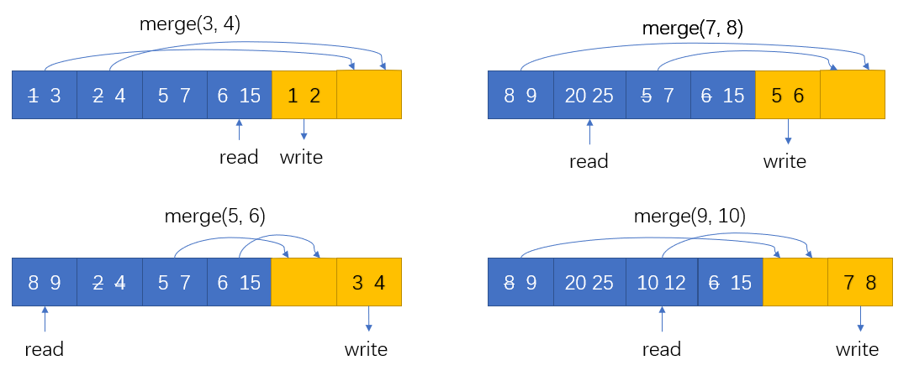
D 选项强行想要 parallel ，因此没有管正在读入的 10, 12，直接基于现有 3 个 buffer 块 merge ，因此进行了错误的 merge(9, 15)。事实上这一步无法 parallel ，必须等待 10, 12 读完之后才能进行正确的 merge(9, 10)。
Q2-5. Suppose that the replacement selection is applied to generate longer runs with a priority queue of size 4. Given the sequence of numbers { 9, 75, 17, 12, 88, 91, 25, 22, 35, 41, 58, 96, 15 }. Which of the following gives the second output run?
A. 22 35 88 91
B. 22 35 41 58 88 91 96
C. 22 35 41 58 96
D. 22 35 41 58